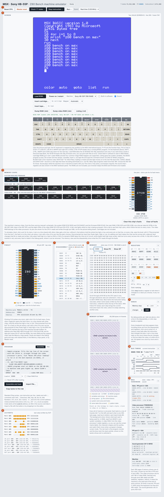
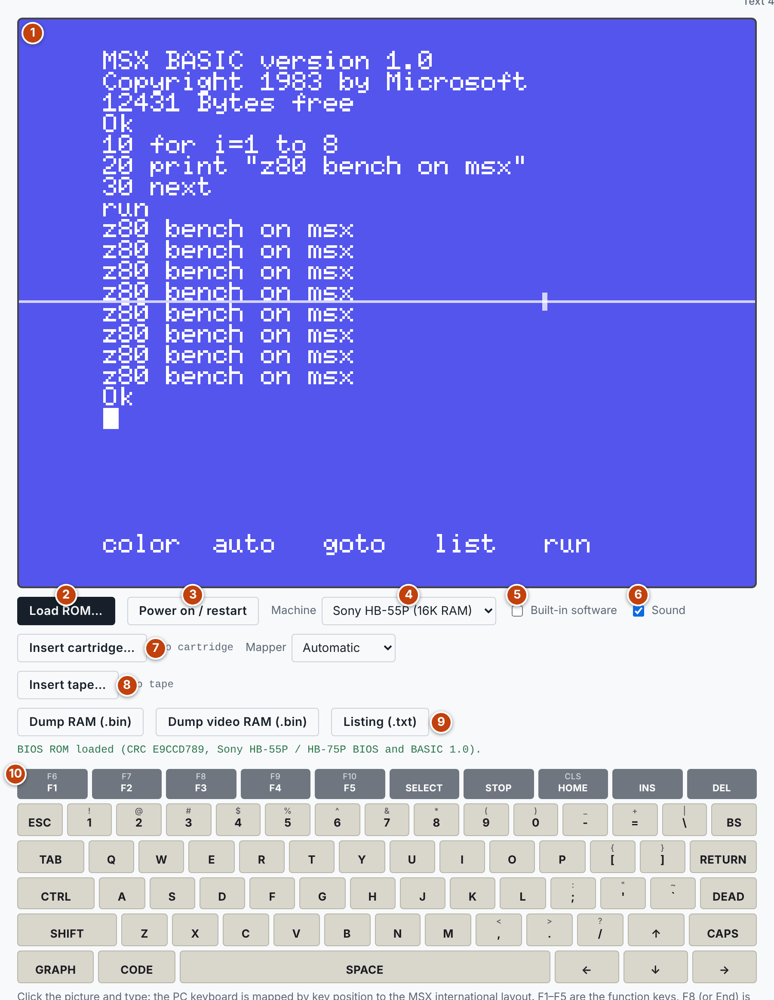
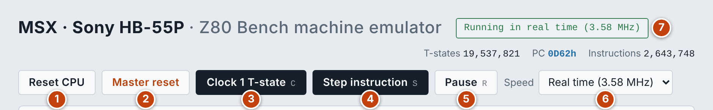
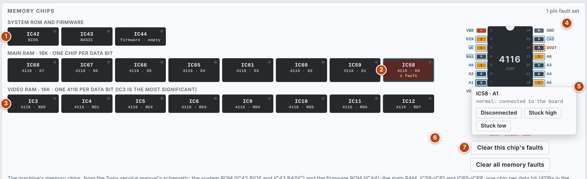
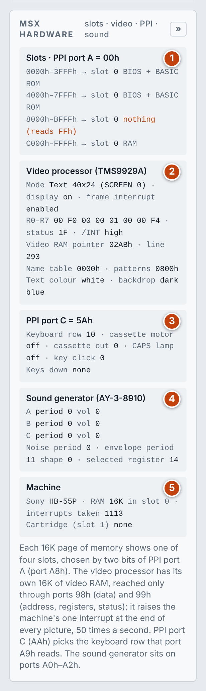
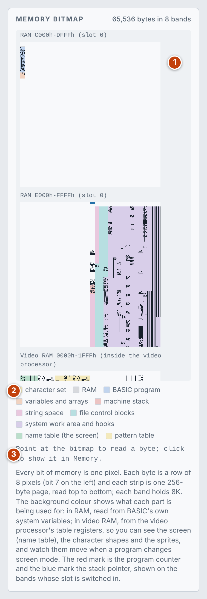

> LIST
MSX documentation
How to use the emulator, and how the machine it models is put together. The numbers in each list match the numbered markers on the screenshot above it.
User guide
The emulator is Z80 Bench with an MSX computer built around the CPU, set up as Sony's HB-55P or HB-75P. Everything Z80 Bench does still works here; this guide covers what the machine adds, and points to the Z80 Bench documentation for the shared debugging tools.
Quick start
- Press Load ROM… and choose your own 32 KB BIOS and BASIC ROM image. If you want Sony's built-in Personal Data Bank as well, choose the 16 KB firmware ROM at the same time. The ROMs are copyrighted and are not included. Your browser keeps them, so you only load them once.
- The machine switches on. With Built-in software unticked it starts in MSX BASIC.
- Click the picture and type, or click the keys drawn under it.
The screen

- Toolbar: reset, clock, step and run controls.
- Screen: the picture, the machine choice, cartridges, tape, dumps and the keyboard.
- Memory chips: the ROM, RAM and video RAM chips, with live pins and fault simulation.
- Pinout: the Z80, live.
- Program: the assembler and hex loader.
- I/O ports
- Disassembly
- Memory: the 64K the CPU sees now, through whichever slots are switched in.
- Memory bitmap: the ROMs, the RAM and the video RAM as a picture, tinted by use.
- Registers
- Debug: breakpoints, stops and faults.
- Bus timing
- MSX hardware: the slots, the video processor, the PPI and the sound generator.
The machine, the display and the keyboard

- Picture: the video processor's four screen modes and its sprites, drawn line by line as the CPU runs. Click it to give it the keyboard. The line above the picture names the screen mode, and the line and frame being drawn.
- Load ROM…: takes the BIOS and, optionally, the firmware. The message under the buttons names the ROM it recognised.
- Power on / restart: resets the machine and runs it in real time.
- Machine: the Sony HB-55P with 16K of RAM, or the HB-75P with 64K. Many tape programs need more than 16K.
- Built-in software: when ticked and the firmware ROM is loaded, the machine starts in Sony's Personal Data Bank; untick it to start in BASIC.
- Sound: plays the sound generator and the key click while the machine runs in real time. Browsers only allow sound after your first click or key press.
- Insert cartridge… and Mapper: see Cartridges, tape and dumps.
- Insert tape…
- Dump RAM (.bin), Dump video RAM (.bin) and Listing (.txt)
- Keyboard: the MSX international layout. SHIFT, CTRL, GRAPH and CODE stay down for the next key.
Your own keyboard is mapped by key position, so each key types what the MSX key in the same place types.
| Your key | MSX key |
|---|---|
| F1–F5 | The function keys (with SHIFT, F6–F10) |
| F8 or End | STOP. CTRL and STOP together break into a running BASIC program |
| F7 | SELECT |
| Left Alt | GRAPH |
| Right Alt | CODE |
Cartridges, tape and dumps
- Cartridges: a cartridge ROM goes in slot 1. Plain ROMs and four common mega-ROM mappers are supported: Konami, Konami SCC, ASCII 8K and ASCII 16K. Automatic picks the mapper; choose one yourself if a game does not start.
- Loading from tape: insert a
.castape file and type the command the emulator shows:CLOADfor a BASIC program,BLOAD"CAS:",Rfor machine code,RUN"CAS:"for an ASCII file. Loading is instant, and the tape moves on to the next file each time. - Saving to tape:
CSAVE,BSAVEandSAVE"CAS:"record to a new tape, which Save recording downloads as a.casfile. - Dumps: save the RAM or the video RAM as a raw file.
- Listing (.txt): the system variables, the BASIC program as text, the screen and hex dumps.
Running and stepping

- Reset CPU
- Master reset: also forgets the ROMs (load them again to switch on), removes the cartridge and tape and clears memory, breakpoints, stops and faults. It asks for a second click.
- Clock 1 T-state (C)
- Step instruction (S)
- Run / Pause (R). The keyboard shortcuts work when the picture does not have the keyboard.
- Speed: Real time (3.58 MHz) runs at the machine's own speed. Full speed runs as fast as your computer allows. The slow clock rates let you watch the pins change.
- Status: what the machine is doing, or what halted it.
Memory chips and fault simulation

- System ROM and firmware: IC42 (BIOS), IC43 (BASIC) and IC44 (firmware).
- Main RAM: IC58–IC61 and IC65–IC68, one chip for each data bit.
- Video RAM: IC3–IC6 and IC9–IC12, the eight 4116s that belong to the video processor.
- Pinout: click a tile to see that chip's pins, which follow the bus on every clock. A tile's dot lights while its chip is being accessed, and a tile with a fault turns red.
- Pin menu: click a pin and choose Disconnected, Stuck high or Stuck low.
- Faults on this chip
- Clear this chip's faults and Clear all memory faults
The machine then runs with the fault, and the memory view and the disassembly show what the CPU reads through it:
| Pin | Fault | Effect |
|---|---|---|
| Address | Any | The chip uses the wrong cell. A disconnected input floats high |
| Data | Any | That bit is changed on reads and writes |
| Chip select (RAS or CAS on a dynamic RAM) | Stuck high or disconnected | The chip is out of circuit |
| Write enable | Stuck high or disconnected | Writes are lost |
| Write enable | Stuck low | Every access becomes a write |
The video RAM's pins are shown for the CPU's reads and writes through port 98h, not for the picture being drawn. Cartridge chips are not included. Faults are listed in the Debug pane and cleared there, here, or by Master reset.
MSX hardware panel

- Slots: the value on PPI port A, and for each 16K page which slot it shows and what is there.
- Video processor: the screen mode, whether the display and the frame interrupt are on, registers R0–R7 and the status register, the video RAM pointer, where each table is in video RAM, and the text and backdrop colours.
- PPI port C: the keyboard row selected, the cassette motor and output, the CAPS lamp and the key click, with the keys held down.
- Sound generator: for channels A, B and C the tone frequency and note, noise and volume, then the noise and envelope settings.
- Machine: the model, the RAM and its slot, the interrupts taken, and the cartridge with its mapper.
Memory bitmap

- Bands: the ROMs, the RAM and the video RAM, one pixel per bit; scroll the box to see them all. The red mark is the program counter and the blue mark the stack pointer, shown on the bands whose slot is switched in.
- Tints: in RAM the background colour shows what BASIC is using each part for, read from its own system variables. In video RAM it shows the video processor's tables, so you can see the screen (the name table), the character shapes and the sprites, and watch them move when a program changes screen mode.
- Readout: point at the bitmap to read a byte; click to show it in the Memory panel.
The debugging tools
The remaining panels are Z80 Bench's own and work the same way here. In the Memory panel only RAM can be edited.
- Pinout
- Loading a program: the sample program loads into RAM at
E000h - Disassembly and breakpoints
- Memory
- Registers and register stops
- Debug pane: memory, pin and bus stops
- Bus timing
Hardware reference
The model follows the MSX standard and, for the memory chips, the schematic in Sony's service manual.
The machine
An MSX is a Z80A with three support chips.
| Part | Details |
|---|---|
| CPU | Z80A at 3.58 MHz. Every opcode fetch gets one wait state, so it takes 5 T-states |
| Video processor | TMS9929A, with 16K of video RAM of its own |
| PPI | 8255: slot select, keyboard, cassette control |
| Sound generator | AY-3-8910: three tone channels, noise and envelope |
| ROM | 32K BIOS and MSX BASIC 1.0; on these Sonys also a 16K firmware ROM |
| RAM | 16K (HB-55P) or 64K (HB-75P) |
Memory and slots
Memory is four 16K pages. Each page shows one of four slots, chosen by two bits of PPI port A (port A8h): bits 1–0 for page 0, up to bits 7–6 for page 3.
| Slot | Contents |
|---|---|
| 0 | BIOS and BASIC ROM at 0000h–7FFFh; the firmware ROM at 8000h; on the HB-55P its 16K of RAM at C000h |
| 1 | Cartridge slot |
| 2 | On the HB-75P, 64K of RAM |
| 3 | Second cartridge slot (empty in the emulator) |
A page whose slot has nothing at that address reads FFh.
I/O ports
| Port | Device | Use |
|---|---|---|
| 98h | Video processor | Video RAM data |
| 99h | Video processor | Write: address and registers. Read: status |
| A0h | Sound generator | Register number |
| A1h | Sound generator | Write register |
| A2h | Sound generator | Read register |
| A8h | PPI port A | Slot select |
| A9h | PPI port B | Keyboard columns (read) |
| AAh | PPI port C | Keyboard row, cassette, CAPS lamp, key click |
| ABh | PPI control | Mode, and setting single bits of port C |
Video processor
- Video RAM: 16K that only the video processor can reach. The CPU sets an address through port
99hand then reads or writes bytes through port98h. - Picture: 256 × 192 pixels inside a border, 16 colours, 32 sprites.
- Timing: these are PAL machines: 313 lines per frame and 228 CPU T-states per line, 50 frames a second.
- Interrupt: the video processor raises the machine's only interrupt, at the end of every picture. Reading the status register clears it.
| BASIC | Mode | What it shows |
|---|---|---|
| SCREEN 0 | Text | 40 × 24 characters, two colours |
| SCREEN 1 | Graphics I | 32 × 24 characters with colour groups, and sprites |
| SCREEN 2 | Graphics II | 256 × 192 with colour for every line of 8 pixels, and sprites |
| SCREEN 3 | Multicolour | 64 × 48 blocks, and sprites |
Registers 2–6 say where the name table, the pattern table, the colour table and the two sprite tables are in video RAM. The MSX hardware panel and the memory bitmap show them.
PPI and keyboard
Port C of the PPI selects a keyboard row with its low four bits; port B then reads that row's eight keys, low for a pressed key. The other bits of port C drive the cassette motor (bit 4), the cassette output (bit 5), the CAPS lamp (bit 6) and the key click (bit 7).
| Row | D0 | D1 | D2 | D3 | D4 | D5 | D6 | D7 |
|---|---|---|---|---|---|---|---|---|
| 0 | 0 | 1 | 2 | 3 | 4 | 5 | 6 | 7 |
| 1 | 8 | 9 | - | = | \ | [ | ] | ; |
| 2 | ' | ` | , | . | / | DEAD | A | B |
| 3 | C | D | E | F | G | H | I | J |
| 4 | K | L | M | N | O | P | Q | R |
| 5 | S | T | U | V | W | X | Y | Z |
| 6 | SHIFT | CTRL | GRAPH | CAPS | CODE | F1 | F2 | F3 |
| 7 | F4 | F5 | ESC | TAB | STOP | BS | SELECT | RETURN |
| 8 | SPACE | HOME | INS | DEL | ← | ↑ | ↓ | → |
Sound generator
- Tone: three square-wave channels, A, B and C, each with its own period and volume.
- Noise and envelope: one noise generator that can be mixed into any channel, and one envelope generator that can drive any channel's volume.
- Key click: a one-bit output on PPI port C, mixed with the sound generator.
- I/O port: the chip's own port A reads the joysticks and the cassette input.
Memory chips
| Position | Chip | Use |
|---|---|---|
| IC42, IC43 | Two 16K ROMs (one 32K mask ROM in IC42 on some boards) | BIOS and BASIC |
| IC44 | 16K ROM | Firmware: Personal Data Bank |
| IC58–IC61, IC65–IC68 | 4116 (HB-55P) or 64K dynamic RAM (HB-75P) | Main RAM, one chip for each data bit D0–D7 |
| IC3–IC6, IC9–IC12 | 4116 | Video RAM. IC3 holds the video processor's RD0, which is its most significant bit, and IC12 its RD7 |
These follow the service manual's schematic. They have not been checked against a real board.
What is not emulated
- Tape signals: tape files are handled by trapping the BIOS tape routines, so loading and saving are instant and the cassette waveform is not modelled.
- Joysticks, printer and disk drives
- The second cartridge slot